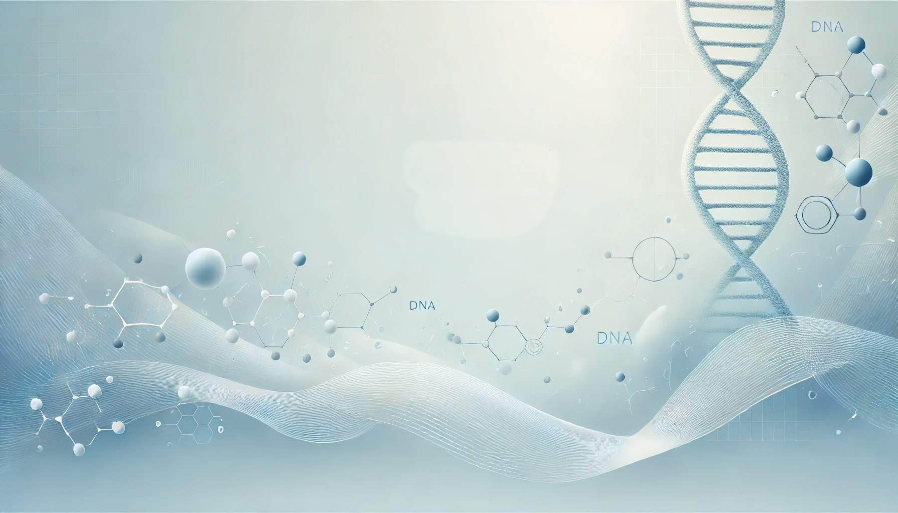

TMU-CWRU Symposium
Home
Symposium

2025 TMU-CWRU Symposium on Cancer Translational Research
27-28th, March, 2025 at Taipei Medical University International Conference Hall,
16F, Comprehensive Medical Building (Rear Building)
Agenda
Register